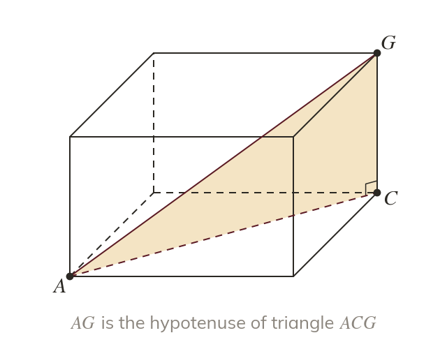
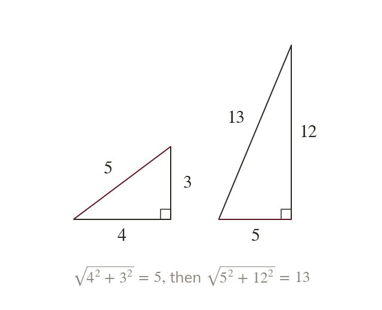
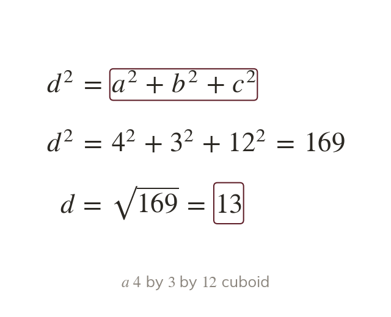
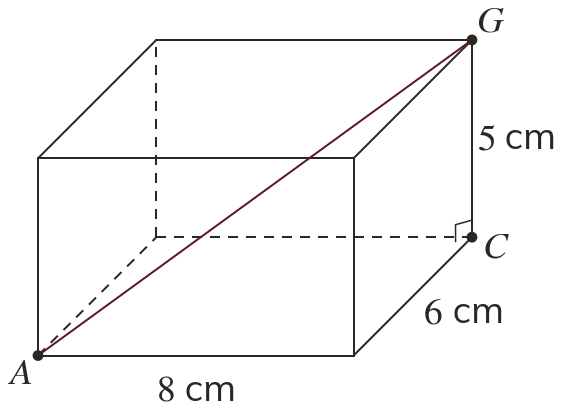
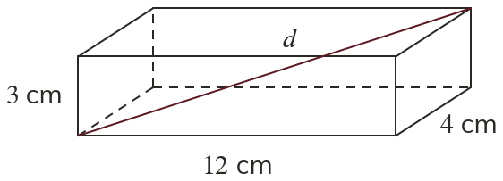
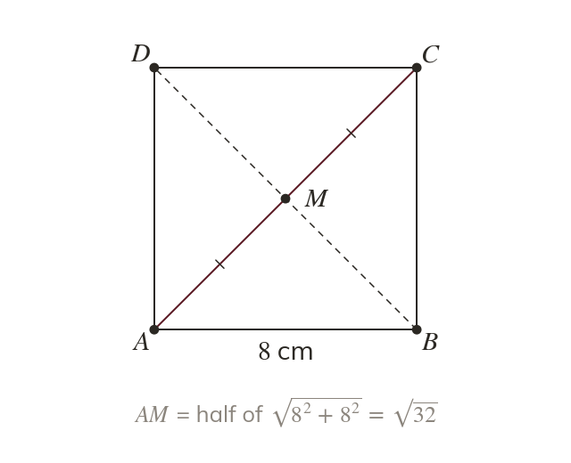
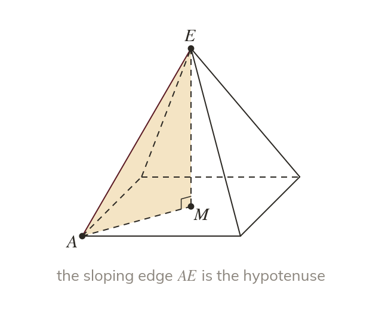
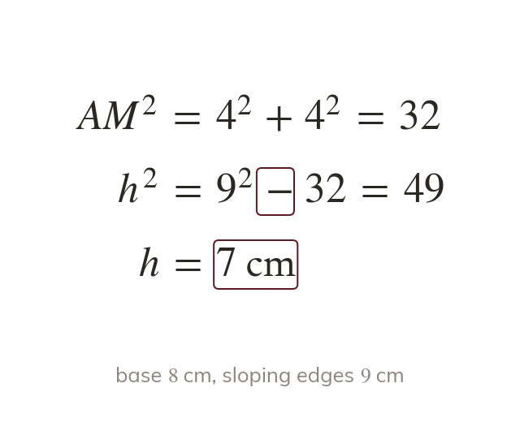
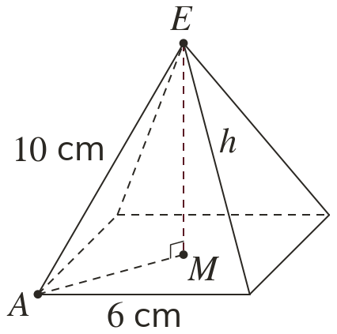
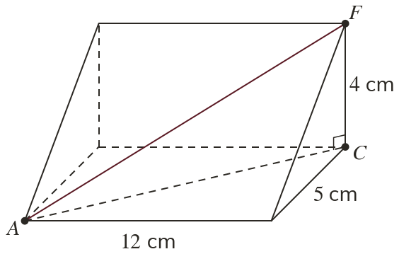

A length inside a solid
A length inside a solid is a side of a right-angled triangle. Find that triangle, then redraw it flat.
A box, a room or a pyramid hides right-angled triangles in three dimensions. Finding the right one turns a length inside a solid into Pythagoras, used twice.
Work down the page at your own pace. Write every answer in your book first, then click to check it.
Read each card, then follow the worked examples one step at a time.

A length inside a solid is a side of a right-angled triangle. Find that triangle, then redraw it flat.

The face diagonal comes first, across the base. It then becomes a shorter side for the space diagonal.

The two steps combine into
Each edge of the cuboid is squared once.


Pick an answer. If it's wrong, the feedback tells you which mistake it was.
Write the blanks in your book first, then tap each one to check.
Read each card, then follow the worked examples one step at a time.

A pyramid's apex sits above the centre of its base. The centre is half a base diagonal from each corner.

The height, half a base diagonal and a sloping edge make a right-angled triangle. The sloping edge is its hypotenuse.

The height is a shorter side, so its square is a subtraction. With base cm and edges cm, the height is cm


Pick an answer. If it's wrong, the feedback tells you which mistake it was.
Write the blanks in your book first, then tap each one to check.
Finished? Next lesson: 10H.17.2 Angles Between Lines and Planes.
For each skill, tap the one that is true for you today. Your Revise pages start with anything you mark Not yet.
Your ratings are saved on this device only.
Log in, then search for a code to practise that skill.
Videos, worksheets and more on each part of this lesson.